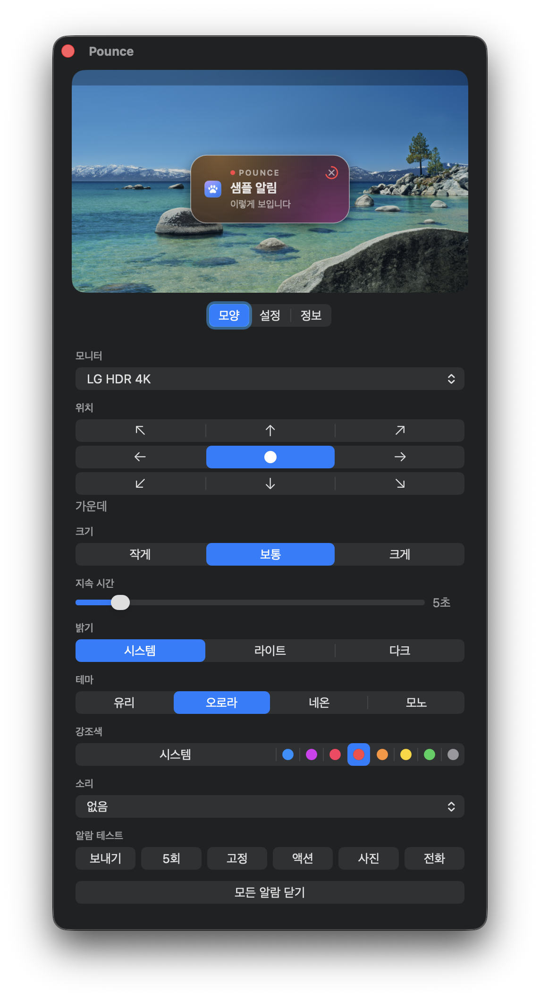

정보
맥 알림을 놓치지 않게, 원하는 자리로 옮겨 보여줍니다.
brew install --cask ojtiger/tap/pounce

못 바꿉니다. 애플이 오른쪽 위로 박아뒀고 설정에 그런 항목이 없습니다. 그래서 만들었습니다.
시간 지나면 알아서 사라집니다. 마우스를 올려두면 안 사라지고 기다립니다. 그래도 거슬리면 아래 가운데로 내리세요. 자리는 아홉 개 다 됩니다.
안 나갑니다. 전부 이 맥 안에서 끝납니다. 밖으로 나가는 건 새 버전 나왔나 보는 것 하나뿐이고, 그것도 설정에서 끄면 됩니다.
macOS 14 소노마부터. M 시리즈든 인텔이든 됩니다. macOS 26 에서는 시스템 유리를, 그 아래에서는 서리 유리를 씁니다.